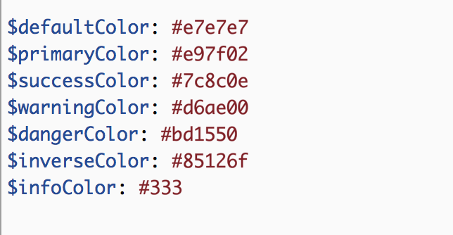
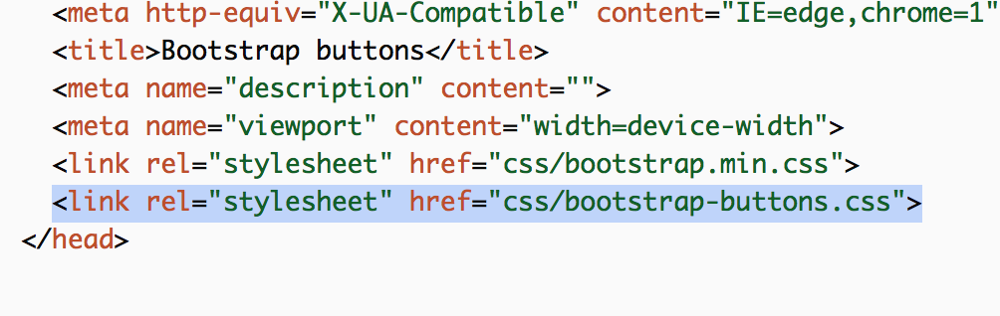

Replace the HEX values at the top of bootstrap-buttons.sass with your project's own kickass colors (0to255.com is a good resource, if you need to find slightly lighter or darker tints to make your buttons all look good together) 
Compile bootstrap-buttons.sass to a CSS file that is included BELOW Bootstrap's style sheet. (If you don't want to download the SASS gem and generally be anywhere near the command line, I recommend CodeKit for compiling SASS.)

Pat yourself on the back. You've saved the web from another set of default Bootstrap buttons.